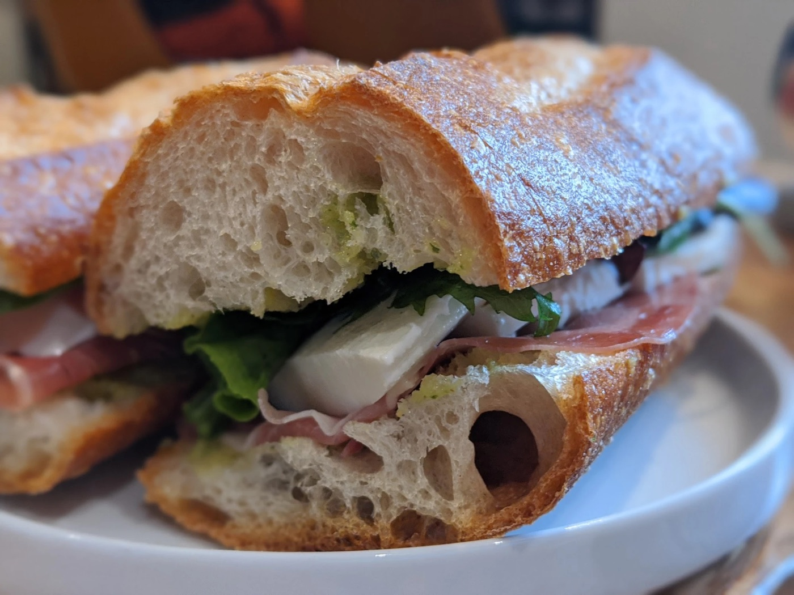
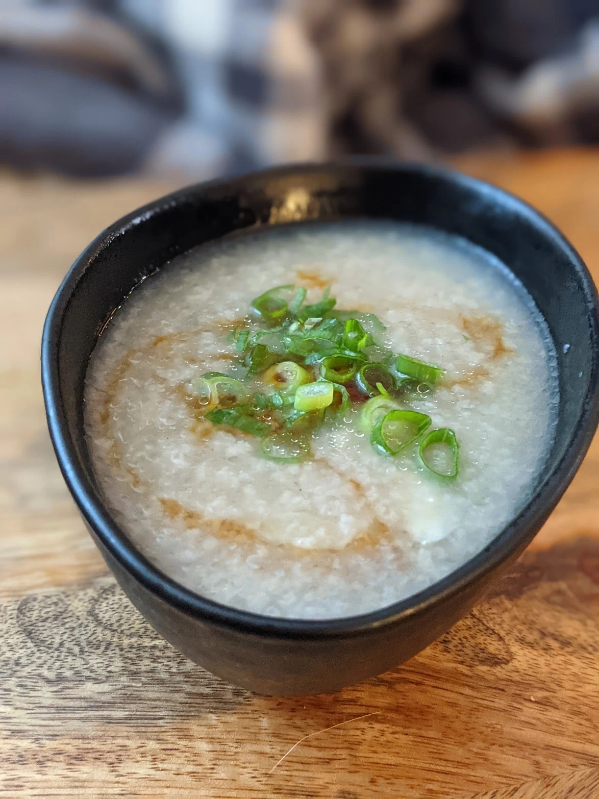

Weeknight dinners, big pots, and things on toast.
mains
-
Burmese / noodle soup
ohn no kaukswe
Burmese chicken curry in a coconut chickpea broth, over noodles with lime and fresh herbs.
-

Game day / sandwich
the perfect sandwich
Prosciutto, fresh mozzarella and arugula on a baguette with pesto aioli.
-

Sick day / porridge
rice porridge (congee)
Rice, bone broth, garlic and ginger cooked down with a seared chicken thigh.
-

Cookout / side
dilly red-skinned potato salad
Red potatoes, lots of dill, a little red onion, just enough Kewpie.
-

Cozy / pasta
honeynut squash mac and cheese
Roasted honeynut squash blended into the cheese sauce, sage baked on top.
-

Weeknight / noodles
neoguri copycat ramen
Gochujang broth, seaweed, shrimp and an egg. Ten minutes, start to slurp.
-

Weekend project / bread
no-knead overnight bread
Mix it before bed, bake it the next evening. A crackly, chewy boule.